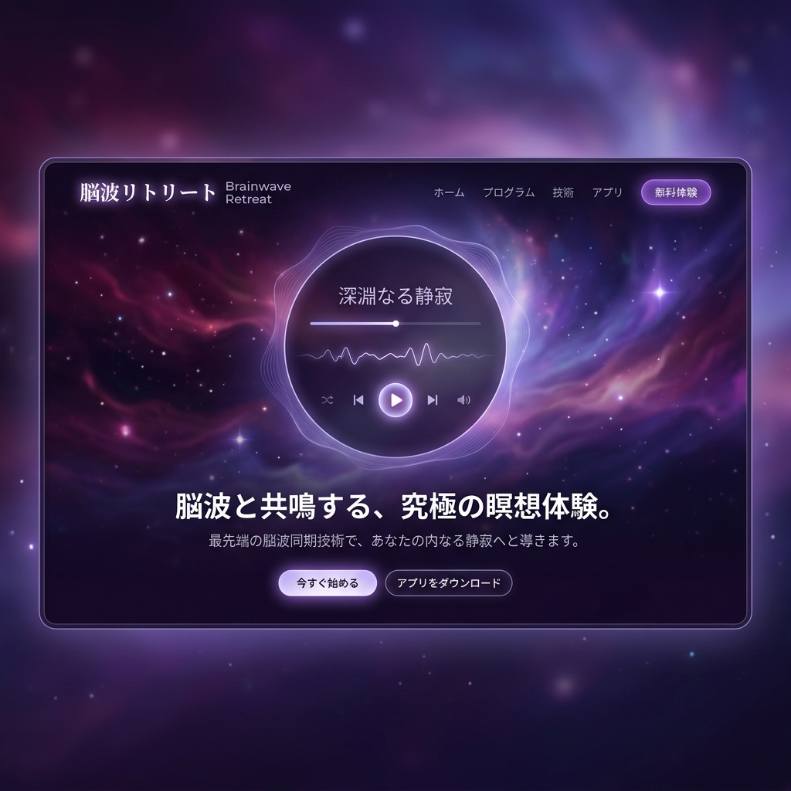

脳波が書き換わる、
究極のVRメディテーション。
「瞑想しても雑念が消えない」。AURA-MEDITATIONは、EEG（脳波センサー）搭載のヘッドバンドとVRを連動させ、あなたの脳波の状態に合わせてVR空間の景色と音楽がリアルタイムに変化する次世代のマインドフルネス体験です。

「無になる」ことの難しさ
マインドフルネスの重要性は誰もが知っていますが、目を閉じて呼吸に集中しようとしても、明日のプレゼンや夕飯の献立といった「雑念」が次々と湧いてきます。自分の瞑想が正しいのかフィードバックがない状態での実践は、挫折の最大の原因です。
あなたの脳波が、世界を創る
リアルタイム環境同期
あなたがリラックス（α波・θ波が増加）すると、VR空間の嵐が収まり、美しいオーロラが出現。脳の状態が視覚的なフィードバックとして即座に現れます。
バイノーラル・サウンドスケープ
心拍数や脳波の乱れを検知すると、それを中和する特定の周波数のアンビエント音楽がAIによってリアルタイム生成されます。
ガイド付きニューロ・ジャーニー
単なる風景ではなく、「不安の解消」「深い睡眠への導入」など、目的に合わせたナレーションと視覚効果があなたを深いトランス状態へ導きます。
見えない「心の状態」をデータ化する
セッション終了後には、あなたの脳波の推移グラフがダッシュボードに表示されます。「開始5分で極度の集中状態に入った」「最後の3分間は雑念が混ざった」といった具体的なスコアが提示され、瞑想の上達を客観的に確認できます。
トップパフォーマンスのための脳の筋トレ
AURA-MEDITATIONは、スピリチュアルなツールではなく、極めて科学的なアプローチです。1日15分のニューロフィードバック・トレーニングを続けることで、前頭葉の働きを活性化させ、ストレス耐性と圧倒的な集中力を獲得できます。
Case Study | シリコンバレーの起業家たち
常にプレッシャーに晒されるCEOたちが導入。重要な投資家ピッチの前に10分間の「フォーカス・セッション」を行うことで、極度の緊張状態から理想的な「ゾーン（フロー状態）」への意図的な切り替えに成功。彼らのルーティンに欠かせないツールとなっています。
意識の深淵へ、テクノロジーで潜る
外部からの刺激に溢れた現代において、最も贅沢な空間は「完全に静寂な自分の内側」です。私たちはVRと脳波技術を駆使し、誰もが数分で深い瞑想状態にアクセスできる世界を実現します。